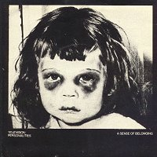
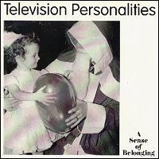

Television Personalities |
 1983 - Rough Trade - RT109 - 7" Songs: A Sense Of Belonging Paradise Estate
Daniel Treacy, Joseph Foster, Mark Flunder, David Musker - August 1983 |
 1993[?] - Overground - OVER34 - 7" Songs: A Sense Of Belonging Baby's Turning Blue
Baby's Turning Blue recorded 1987, previously unreleased |